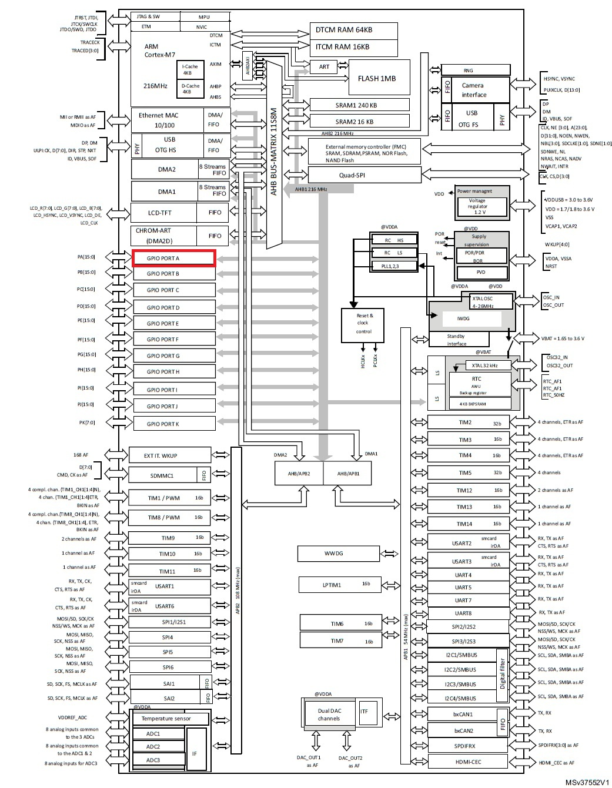
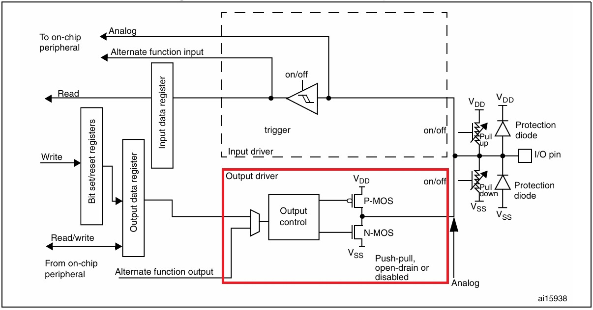
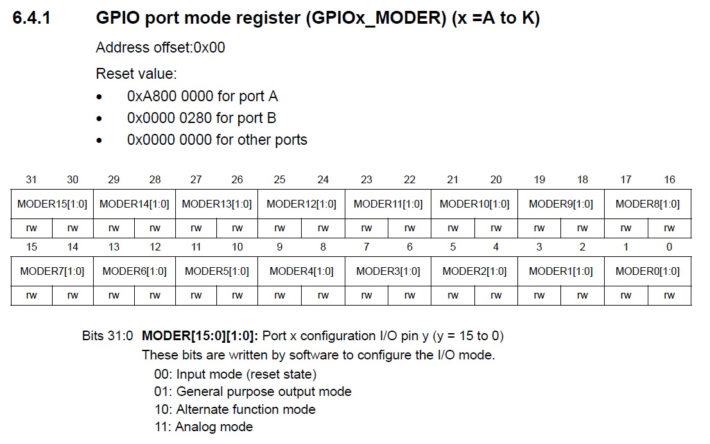
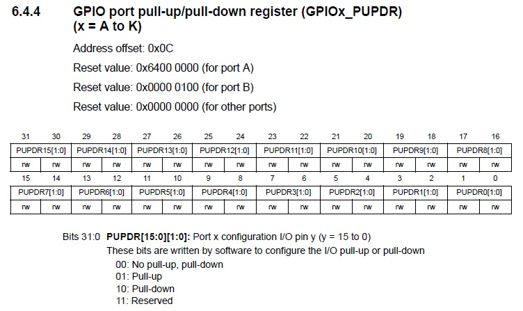
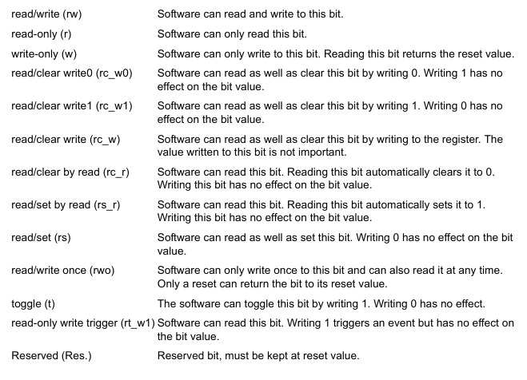

Schriiiiiiiii ⛓, Schlack ⛓️💥, Boaang 🚧, ..., ..., Criiiiiiii😶 !
Aah ! Vous revoilà ! J'ai bien cru vous avoir perdu durant le chapitre sur l'architecture des MCU, mais vous n'avez pas abandonné. On m'avait bien dit que j'avais affaire à la crème de la crème. Allez, rentrez vite, aujourd'hui, nous allons parler périphérique, mémoire et registre.
Pas les sujets les plus passionnants du monde me diriez-vous ? Et effectivement, je n'en dirais pas moins. Cependant, l'étude de ces notions est indispensable à la bonne compréhension du fonctionnement d'un MCU. Nous sommes donc obligés de passer par là 😒.
Néanmoins, le prix à payer ne sera pas sans bénéfice. À la fin de cette série d'article, vous connaîtrez les principes de fonctionnement des périphériques, vous saurez comment ceux-ci sont interconnectés au MCU et vous serez même en mesure d'interconnecter des mémoires ou des périphériques externes, réalisés par vos soins, à votre microcontrôleur favoris (et oui 😉).
Emballant, n'est-ce pas ? Allez, entamons de suite la lecture de cet article !
1. Les registres du MCU
Avant de parler registre, commençons par parler périphérique. Dans le chapitre précédent, nous avons vu qu'un périphérique était un dispositif électronique que l'on reliait au MCU afin de lui ajouter de nouvelles fonctionnalités (liaison série, I2C, SPI, etc.). Cette définition est claire, mais soulève une question de la plus haute importance 🤔. Par quel moyen le MCU arrive-t-il à piloter ses périphériques ? Ne cherchez pas midi à quatorze heures, la réponse est simple et vous vous en doutez, via l'utilisation des registres.
💬
Les registres sont des circuits électroniques qui permettent d'interfacer un périphérique avec le CPU. L'interface se fait généralement via le bus mémoire. Ni plus, ni moins.
En fonction de leur complexité, les périphériques peuvent posséder une dizaine de registres pour les plus simples et jusqu'à une centaine de registres pour les plus complexes (périphériques USB ou Ethernet par exemple). Leur fonctionnement est décrit dans le manuel de référence du composant.
Pour les non-initiés, comprendre le fonctionnement des registres n'est pas chose aisée et je pense que pour bien clarifier leur fonctionnement, l'étude d'un cas concret s'impose.
Prenons donc comme exemple un des périphériques les plus simples parmi l'ensemble des périphériques équipés dans notre MCU. J'ai nommé le périphérique GPIO :

Parmi la multitude de périphériques équipés dans la puce, celui-ci a pour mission de piloter les broches d'entrées-sorties du composant. C'est un périphérique facile à assimiler. Il est donc idéal pour commencer la programmation des registres.
1-1. Un premier pas avec les registres
Rentrons directement dans le vif du sujet et étudions le pseudo-code ci-dessous. Son but est de positionner une broche d'entrée-sortie (broche PA0) au niveau logique haut :
/* 1. Les registres du périphérique GPIO sont situés à une adresse spécifique. Dans un premier temps, on déclare des pointeurs et on les initialise avec les adresses récupérées dans le manuel de référence. Ne vous inquiétez pas, nous reviendrons sur ces lignes dans le prochain chapitre. */ volatile uint32_t* GPIOA_MODER = (volatile uint32_t*) 0x40020000; volatile uint32_t* GPIOA_OTYPER = (volatile uint32_t*) 0x40020004; volatile uint32_t* GPIOA_PUPDR = (volatile uint32_t*) 0x4002000C; volatile uint32_t* GPIOA_ODR = (volatile uint32_t*) 0x40020014; /* 2. Ensuite, nous configurons les registres via de simples accès mémoire. Nous configurons les broches du port GPIO A : broche PA0 en sortie et broches PA1 à PA15 en entrée (registre MODER), étage PUSH-PULL activé pour chaque broche (registre OTYPER) et désactivation des résistances de tirage (registre PUPDR). */ *GPIOA_MODER = 0x00000001; *GPIOA_OTYPER = 0x00000000; *GPIOA_PUPDR = 0x00000000; /* 3. Enfin, on positionne la broche PA0 au niveau logique haut. */ *GPIOA_ODR |= 0x1;
En observant ce petit bout de code, on remarque déjà que la programmation des registres d'un périphérique ne sort pas de l'ordinaire. Du point de vue du développeur, programmer un registre consiste juste à venir écrire une valeur dans une variable (un Magic Number).
Néanmoins, contrairement à une opération de lecture et d'écriture dans une mémoire, l'accès à un registre déclenchera des opérations supplémentaires propres à chaque périphérique. Par exemple, l'activation ou la désactivation du driver de sortie d'une broche GPIO :

La figure ci-dessus est un synoptique d'une broche GPIO tiré directement du manuel de référence de notre composant. Sur celui-ci, on observe que l'électronique de chaque broche est constituée de plusieurs signaux de contrôle permettant de configurer celle-ci (pull-up/pull-down, push-pull, open-drain, etc.).
Et bien, mes chers lecteurs, le secret inavoué que l'on ne vous a jamais dit 🤐🗝️ et que chacun de ces signaux de contrôle est relié à un registre. D'ailleurs, c'est grâce à cette caractéristique que nous pouvons directement paramétrer un périphérique en écrivant des valeurs à des adresses mémoire spécifiques 👍.
❔
Merci pour cette magnifique explication Emb ! Mais nous, ce qui nous intéresse, c'est comment déterminer les valeurs à écrire dans ces registres 🤔 ?
Ah, très bonne question ! En fait, toutes les informations nécessaires à la programmation des registres sont présentes dans le manuel de référence du composant RM0385, de manière, je dirais, plus ou moins éparse ... Mais pas d'inquiétude, contrairement à certains dont je ne saurais prononcer le nom, les équipes de STMicroelectronics sont rigoureuses et leur documentation est plutôt bien écrite 👌.
💬
Yeah ! Un point pour ST ! Zéro point pour Freesc..😶🤐 ! Arf, ma langue a encore fourché 😊 !
Allez, trêve de plaisanterie, commençons de suite à expliquer comment déterminer ces valeurs.
1-2. Le registre GPIO_MODER
Dans le petit bout de code précédent, plusieurs registres ont été écrits pour configurer la broche PA0. Le registre MODER a permis de configurer la broche en sortie. Le registre OTYPER a permis d'activer l'étage PUSH-PULL et le registre PUPDR a permis de désactiver les résistances de tirage.
Pour déterminer les valeurs à écrire et la signification de chaque bit, je suis tout simplement allé lire la documentation du périphérique GPIO présente dans le manuel de référence. J'ai d'ailleurs trouvé la description suivante pour le registre GPIOx_MODER :

Dans la figure ci-dessus, on s'aperçoit que le registre est constitué de 16 champs, un pour chacune des 16 broches GPIO du port. Chaque broche peut être configurée en entrée en écrivant la valeur 0, en sortie en écrivant la valeur 1, en mode analogique en écrivant la valeur 3 ou en routage de fonctions auxiliaires en écrivant la valeur 2. Dans l'exemple précédent, j'ai choisi volontairement de configurer la broche PA0 en sortie et les autres en entrée. J'ai donc écrit la valeur 1 dans le registre. Cependant, en fonction de l'application, j'aurais pu configurer le registre de plein d'autres manières :
/* 1. PA0 à PA14 en sortie (1), PA15 en mode analogique (3) */ *GPIOA_MODER = 0xD5555555; /* Valeur binaire : 1101 0101 0101 0101 0101 0101 0101 0101 */ /* 2. PA0 et PA1 en mode auxiliaire (2), PA2 à PA15 en entrée (0) */ *GPIOA_MODER = 0x0000000A; /* Valeur binaire : 0000 0000 0000 0000 0000 0000 0000 1010 */ /* 3. Un soupçon plus compliqué, PA0 en sortie (1) et PA1 à PA14 non modifiés. */ *GPIOA_MODER &= 0xFFFFFFFE; *GPIOA_MODER |= 0x00000001; /* On positionne à zéro le premier bit (&=) puis on positionne PA0 en sortie (|=) */
Vous voyez ! La programmation des registres n'est vraiment pas compliquée. Celle-ci se résume surtout à éplucher beaucoup de documentation avec minutie puis appliquer les configurations désirées... Mais bref, continuons d'éplucher notre documentation 🤓.
1-3. Le registre GPIO_OTYPER
Passons maintenant à l'explication du registre OTYPER dont la fonction est de configurer l'étage de sortie d'une broche en mode PUSH-PULL ou OPEN-DRAIN :

Contrairement au registre précédent, on remarque que seuls les 16 bits de poids faible du registre sont implémentés. Le registre possède toujours 16 champs (un pour chaque broche) mais leur taille est réduite à 1 bit. On observe qu'un niveau 0 active l'étage PUSH-PULL alors qu'un niveau 1 active l'étage OPEN-DRAIN. Allez, comme précédemment quelques petits exemples de configuration :
/* PA0 à PA15 en OPEN-DRAIN */ *GPIOA_OTYPER = 0x0000FFFF; /* PA0 à PA3 en PUSH-PULL, PA4 à PA15 en OPEN-DRAIN */ *GPIOA_OTYPER = 0x0000FFF0; /* PA11 en OPEN-DRAIN, le reste en PUSH-PULL. */ *GPIOA_OTYPER = 0x00000800; /* A noter que sauf mention contraire dans la documentation, les bits non implémentés peuvent être écrits à une valeur arbitraire dans le programme. La solution ci-dessous est donc aussi valide pour positionner PA11 en OPEN-DRAIN. Cependant, par convention tacite, on utilise toujours la valeur zéro. */ *GPIOA_OTYPER = 0xFFFF0800;
Bon, à mon avis, la configuration des registres doit commencer à rentrer ! Pour ceux qui montreraient encore quelques difficultés, je vous conseille de noter les bits à configurer sur un bout de papier puis de réaliser la conversion de chaque quartet binaire en hexadécimal. Cette technique est infaillible 👌 et je vous assure que même les meilleurs l'utilisent (véridique à 100%).
À noter que pour les plus curieux et pour ceux qui se demandent à quoi correspondent les montages PUSH-PULL et OPEN-DRAIN, j'ai rédigé un article expliquant comment sélectionner le driver de sortie d'une broche GPIO. Vous pouvez le retrouver en suivant ce 🌼 magnifique lien 🌼 !
1-4. Le registre GPIO_PUPDR
Allez, revenons à nos moutons 🐑 et passons à la configuration des résistances de tirage de notre GPIO via le registre PUPDR :

Le fonctionnement est similaire aux registres précédents, la valeur 0 déconnecte les résistances de tirage de la broche, la valeur 1 connecte une résistance de PULL-UP et la valeur 2 connecte une résistance de PULL-DOWN. Je n'ai pas grand-chose à ajouter mis à part que, dans notre exemple, on écrivait la valeur 0 pour désactiver toutes les résistances du port.
1-5. Le registre GPIO_ODR
Passons maintenant au dernier registre, le registre GPIOA_ODR. Sa description est la suivante :

Pas de mystère pour ce registre, la valeur 1 positionne la broche correspondante au niveau logique haut et la valeur 0 la positionne au niveau logique bas. Pour activer la broche PA0, il faut donc écrire la valeur 1 dans le bit ODR0 :
*GPIOA_ODR |= 0x1;
1-6. Le registre GPIO_IDR
Les plus observateurs auront remarqué que le registre ODR est dédié aux sorties numériques. Il est donc naturel de se demander si ce registre peut aussi être utilisé pour relire l'état d'une entrée numérique.
Comme vous vous en doutez, la réponse est non. Lorsque vous souhaitez relire l'état d'une entrée numérique, le registre ODR ne peut pas être utilisé. Il faut impérativement utiliser le registre IDR qui est dédié à la lecture des entrées numériques :

En fait, lorsqu'une broche est configurée en entrée, la lecture du registre ODR renverra la valeur écrite dans le registre et non pas la valeur relue sur le port. Il faut donc bien faire attention à utiliser le bon registre en fonction de la situation. L'exemple ci-dessous montre les cas d'utilisation des registres ODR et IDR :
/* On réalise une lecture du registre ODR lorsque le port est configuré en sortie et que l'on souhaite positionner un port sans toucher les autres broches GPIO */ /* Lecture du port A puis activation de PA0 */ myRegister = *GPIOA_ODR; *GPIOA_ODR = myRegister | 0x1; /* On réalise une lecture du registre IDR lorsque le port est configuré en entrée et que l'on souhaite relire l'état d'une broche GPIO */ /* Lecture de PA0 */ myRegister = ( *GPIOA_IDR ) & 0x1;
Le code ci-dessus illustre une situation typique de lecture, modification et écriture de registres. Notez aussi l'existence du registre BSRR qui permet de positionner une broche à l'état HAUT ou BAS sans toucher aux autres broches du port et tout ça de manière atomique.
2. Le mini-quiz 👑
Bon, je pense que cet article est suffisamment dense et que nous allons nous arrêter ici 🥱. Mais avant de partir, je vous ai préparé un autre mini-quiz de mon cru afin de peaufiner vos connaissances sur les registres 👍.
2-1. Question 1
Dans l'exemple de configuration de la broche PA0, j'ai déclaré les pointeurs contenant l'adresse des registres avec l'attribut volatile. Pouvez-vous me dire ce qu'il se passerait si on l'omettait ?
Réponse
💬
2-2. Question 2
Dans les exemples précédents, nous avons étudié plusieurs registres. Certain était accessibles à la fois en lecture et en écriture (RW) et d'autre seulement en lecture (R). Pouvez-vous me dire s'il existe d'autres types d'accès ?
Réponse
💬
Oui et il en existe beaucoup d'autre, d'ailleurs, le paragraphe 1.2 du manuel de référence décrit les types d'accès possibles sur les registres de notre composant :

On retrouve nos accès Read/Write (RW), et Read-only (R) vues précédemment mais aussi les accès Write-Only (W), Read/Clear by Read (rc_r) et read/set by Read (rs_r) qui sont souvent rencontré dans les registres de status et d'interruption.
2-3. Question 3
Dans notre pseudo-code, nous avons configuré la broche PA0 en sortie à l'aide du registre MODER. Si j'avais souhaité la configurer en entrée, sauriez-vous me dire si une écriture du registre MODER était nécessaire ?
Réponse
💬
La réponse est non. En observant la figure 3, on s'aperçoit que la valeur de reset du registre MODER est 0xA8000000 pour le port A. Au démarrage du microcontroleur, la broche PA0 est donc configurée en entrée. Pour ce cas particulier, on aurait pu s'abstenir d'écrire une valeur dans ce registre.
A noter que certain registre possède une valeur de reset indéfinie au démarrage. C'est notamment le cas du registre IDR qui contient l'état des broches GPIO.
2-4. Question 4
A votre avis, quelle est la méthodologie faut-il adopter lorsque l'on rencontre des difficultés pour faire fonctionner un périphérique ?
Réponse
💬
Comme vous vous en doutez, il n'y a pas de réponse universelle à cette question. Je vous la pose seulement pour vous avertir que le monde du bas niveau est un monde laborieux et qu'il ne sera pas rare de passer des semaines à faire fonctionner un périphérique externe, une mémoire, de corriger des bugs mystiques ou je ne sais quoi encore...
Dans ces situations, le premier conseil que je vous donnerai sera de relire votre code, la datasheet du composant et son errata (le document listant tout ce qui ne fonctionne pas comme prévu).
Le deuxième conseil sera d'aller observer comment d'autres personnes ont codé ou ont réussi à faire fonctionner le driver sur lequel vous travaillez. Vous pouvez par exemple consulter les forums officiels de ST ou analyser leur code en détail.
Le troisième conseil sera de visualiser les signaux à l'oscilloscope ou d'utiliser un décodeur de trames. Ces outils peuvent rapidement vous débloquer en localisant rapidement la source du ou des problèmes.
Par exemple, lorsque j'ai développé la stack USB de Mk, j'ai du acheté un décodeur de trame afin d'analyser les échanges entre les dispositifs USB. J'étais dans une impasse et je ne comprenais pas pourquoi l'énumération échouait systématiquement. En analysant la sortie USB, j'ai pu déterminer rapidement qu'aucune trame valide ne sortait du périphérique et que mon problème était localisé au niveau de la DMA du coeur USB.
Enfin le dernier conseil et pas des moindres, continuer à persévérer, persévérer et persévérer encore et encore. Les grandes choses se construisent petit à petit, brique après brique et chaque nouveau jour ajoute une nouvelle pierre à l'édifice. 🤔.
3. La prochaine étape
Si vous êtes débutant et que vous souhaitez continuer votre apprentissage du bas niveau en bare-metal, je vous conseille de continuer à vous exercer à la programmation des registres et de développer des drivers simples sur quelques périphériques d'un microcontrôleur de votre choix. Beaucoup de tutoriels sont disponibles sur internet et vous pouvez vous concentrer sur des périphériques simple comme l'UART, l'I2C ou encore le SPI. Viendra ensuite les timers, les interruptions, les DMA et ainsi de suite...
💬
C'est en forgeant que l'on devient forgeron et il faut commencer par les périphériques les plus simples afin de mieux pouvoir dompter les plus complexes. Ayez confiance en vous et perséverez !
Par ailleurs, si vous êtes curieux et que vous souhaitez regarder les bibliothèques logicielles que j'ai développées pour Mk, je vous laisse un lien vers mon github.
4. En résumé
La partie manipulation de registres et Magic Number est maintenant terminée. Ce fut une brève introduction, mais celle-ci était nécessaire pour faire découvrir aux néophytes comment ces petits registres fonctionnaient. Qui sait, peut-être qu'une vocation sera née chez quelques-uns même si cela m'étonnerait grandement 😌.
Avant de passer à la suite, j'aimerais que nous résumions rapidement les points importants. Ne vous en faites pas, cela ne prendra pas longtemps ^^ :
- ✔ Point 1 : les registres sont les interfaces permettant au CPU de configurer les périphériques. Cette configuration est réalisée en réalisant de simples accès mémoires en lecture et ou en écriture.
- ✔ Point 2 : chaque registre a une signification particulière. Les valeurs à écrire dans chacun des bits sont décrites dans le manuel de référence du composant. Dans la littérature, on désigne souvent ces valeurs sous le terme de Magic Number car elles semblent tirées du chapeau.
- ✔ Point 3 : chaque registre possède une valeur de reset. Celle-ci peut être définie par construction ou non et cela dépend souvent du type d'accès supporté par le registre.
Voilà, c'est tout ! Vous voyez, au final, cette première partie était longue, mais il n'y avait vraiment pas grand-chose à mémoriser. Maintenant, nous pouvons passer à notre prochain article que j'ai nommé l'adressage du MCU. Vous vous souvenez que, tout à l'heure, j'ai déclaré des pointeurs pour y inscrire de mystérieuses adresses :
volatile uint32_t* GPIOA_MODER = 0x40020000; volatile uint32_t* GPIOA_OTYPER = 0x40020004; volatile uint32_t* GPIOA_PUPDR = 0x4002000C; volatile uint32_t* GPIOA_ODR = 0x40020014;
Et bien, dans la prochaine partie, nous allons découvrir comment j'ai réussi à déterminer où ces adresses sont localisées et d'une manière plus générale, comment les périphériques et les mémoires sont organisés. Allez, c'est parti 🚀.
Si l'on n'utilise pas ce mot clé, notre bon vieux compilateur commencerait à optimiser les accès mémoires en supposant que les valeurs des registres ne peuvent pas changer entre deux lectures consécutives. On se retrouverait donc dans une situation où la valeur de notre registre ne serait jamais relu parce que le compilateur a cru que notre variable ne pouvait pas changer de valeur indépendemment du flux d'exécution de notre programme. Or, pour certain registre (par exemple le registre IDR vue précédemment) et même parfois pour de la mémoire (mémoire double accès ou autres), ces valeurs peuvent changer indépendemment. C'est pourquoi, il est important d'utiliser ce mot clé lorsque nous manipulons les registres d'un périphérique.